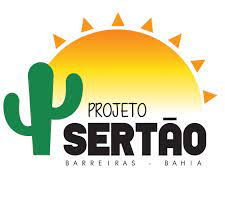
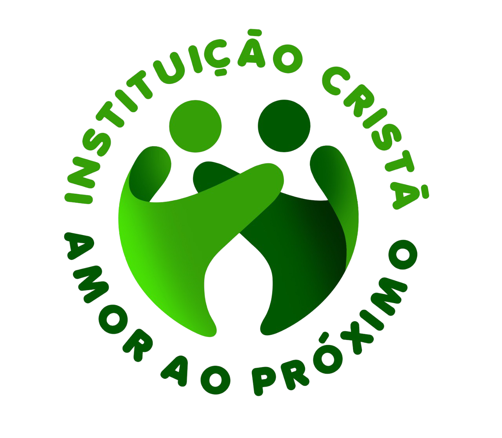
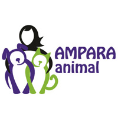
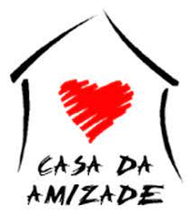

Projeto Sertão
Inicialmente, nomeado como Projeto Piauí, desde 2015, atuando na cidade de Guaribas no sertão do Piauí. O projeto visa atender as carências físicas, emocionais e espirituais dos sertanejos. Desde então, a equipe que vive no local realiza a coordenção das atividades sociais de: Alimentação Diária e o Acompanhamento e Distribuição de Cestas Básicas às famílias. Realizam também os cultos e evangelismo nos povoados regularmente. Além disso, um grupo de voluntários de Macaé e cidades do Rio de Janeiro viaja até a região, duas vezes por ano, para a realização de diversas atividades evangelísticas para as comunidades carentes. Em 2020, o Projeto passou a ser chamado como Projeto Sertão devido ao avanço para a região sertaneja do Norte da Bahia.

Amor ao proximo
A ONG AMOR AO PROXIMO é uma instituição sem fins lucrativos, que tem como objetivo principal TRANSFORMAR A REALIDADE DE VIDA DE CRIANÇAS E ADOLESCENTES da comunidade introduzindo-os ao mundo da Informatica,
Assim, através da educação que transforma o ser, a educação transforma o homem, a educação que forma uma criança.
Diante desta filosofia a instituição AMOR AO PROXIMO, atua com programas educacionais, culturais, sócio-educacionais, geração de emprego e renda e outros.

Ampara
A AMPARA Animal nasceu 2010, com a missão transformar a sociedade através de ações preventivas, para gerar impacto positivo no bem-estar de cães e gatos e na conservação das espécies brasileiras. Combater a violência contra esses seres a partir da defesa dos seus direitos, e na elaboração de políticas públicas mais eficientes. Defender uma sociedade mais justa e ética, onde os animais sejam tratados com respeito, e possam coexistir com a espécie humana em harmonia.
Em 2015 se tornou a instituição que mais ajuda animais no país, ao se tornar uma "ONG mãe" que ampara mais de 530 ONGs e protetores em âmbito nacional.
Há onze anos empreendemos socialmente e atuamos de forma preventiva através de três pilares: castração e conscientização e adoção.
Em 2016, uma nova frente foi criada, a AMPARA Silvestre, com foco em educação e conservação ao reabilitar animais silvestres para que possam ser devolvidos à natureza e também oferecer níveis melhores de bem-estar aos animais condenados ao cativeiro.
Com a nossa expertise e resultados expressivos, atuamos sempre com muito amor pela defesa dos direitos e respeito aos animais.

Instituto Novo Sertão
Nossa caminhada no sertão teve início em 2012 quando José Carlos que ficou conhecido como Zé da Água conheceu Betânia do Piauí e seus muitos vilarejos carentes ao redor. Ele vinha da capital de Teresina que é aproximadamente 500 km até a pequena cidade sertaneja. As primeiras ações tiveram como foco a entrega de insumos emergenciais como água, comida e roupas para pessoas que viviam em extrema pobreza.Porém, depois de pouco tempo nessas ações emergenciais José e os demais amigos que apoiavam as ações perceberam que essas atividades não tinham o poder de mudar por completo a realidade de miséria e falta de esperança que vivenciamos no sertão, foi então que em 2015 juntamos amigos e parceiros que compartilham dos meus sonhos e ideias para uma transformação verdadeira no sertão.
Casa da Amizade
A Casa da Amizade é uma entidade sem fins lucrativos que atende famílias do Grotão de Paraisópolis, uma comunidade socialmente vulnerável, localizada próxima à Marginal Pinheiros e ao bairro do Morumbi em São Paulo. Contando com o apoio de seus voluntários e doadores, a Casa da Amizade atua desde 1995 na comunidade, com atividades sociais e educacionais junto aos moradores. A Casa da Amizade não tem filiação política ou religiosa.
